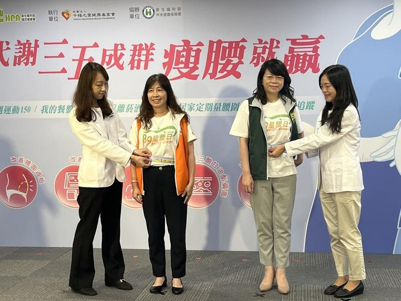
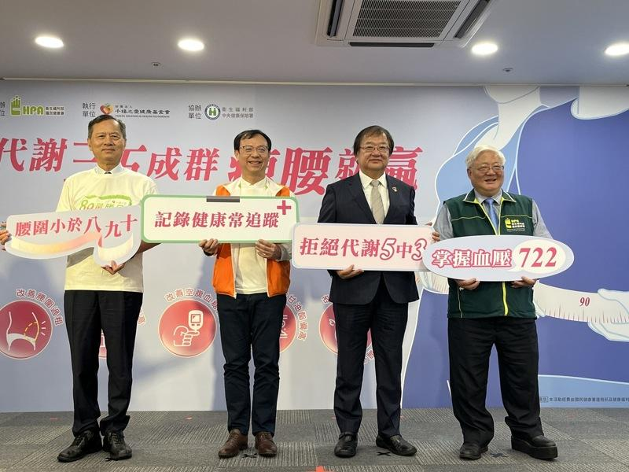

许多人对「A4腰」、「蚂蚁腰」、「反手摸肚脐」应该不陌生，虽然腰围并不是愈小愈好，但超过标准，容易得到代谢症候群，衍生各种慢性疾病。台湾的国健署署长吴昭军表示，代谢症候群是三高、糖尿病、心血管疾病的前兆，及早做好自我健康管理，才能减轻后续健保、医疗资源负担。
吴昭军说，国健署与健保署合作推动「全民健康保险代谢症候群防治计划」，民众可多加利用成人预防保健免费健康检查，以及全民健保行动快易通的健康存折App，输入个人健检数据，即可得知未来10年内罹患5种慢性病的风险。 !function(v,t,o){var a=t.createElement("script");a.src="https://ad.vidverto.io/vidverto/js/aries/v1/invocation.js",a.setAttribute("fetchpriority","high");var r=v.top;r.document.head.appendChild(a),v.self!==v.top&&(v.frameElement.style.cssText="width:0px!important;height:0px!important;"),r.aries=r.aries||{},r.aries.v1=r.aries.v1||{commands:};var c=r.aries.v1;c.commands.push((function(){var d=document.getElementById("_vidverto-bc0de73c10937be205a8d57fd75a9690");d.setAttribute("id",(d.getAttribute("id")+(new Date()).getTime()));var t=v.frameElement||d;c.mount("10171",t,{width:720,height:405})}))}(window,document);
代谢症候群的5项危险因子：包含三高（血压高、血糖高、血脂高）及二害（腰围过粗、好的胆固醇不足），5项中符合其中3项则代表中了，要积极改变生活方式。吴昭军说，代谢症候群可以逆转，国健署调查过去3年民众自我控制的数据，有20%患有代谢症候群的民众通过运动、饮食，数值恢复正常。
健保署署长石崇良表示，代谢症候群提高罹患心血管疾病、糖尿病等风险，根据健保支出的医疗费用统计，慢性病治疗的负担比癌症还要高。健保署于2022年与千禧之爱健康基金会合作，奖励民众记录腰围，并将数据上传「健康存折-代谢症候群专区」，若经判读为代谢症候群，可至App上显示的「全民健保代谢症候群防治计划」诊所治疗。
卫福部部长邱泰源分享，他从小体态属于偏胖，但健康状况没问题。担任立法委员后，生活步骤让体重数字上升，最近积极调整饮食，有看到一些成效。民众要更认识代谢症候群、掌握自身健康，卫福部也将加强健康投资，落实赖清德总统提出的「健康台湾」愿景。
千禧之爱健康基金会董事长许惠恒表示，今年与国健署合作办理「代谢三五成群 瘦腰就赢」网络活动，希望提升民众健康识能，多加利用「慢性疾病风险评估平台」预测未来10年内是否会罹患慢性疾病，定期记录腰围、血压、血糖、三酸甘油酯及高密度脂蛋白胆固醇数值，避免疾病上身。
代谢症候群容易让人忽略，因为身体并无明显不适，但血压、血糖、血脂过高导致身体慢性发炎。国家卫生研究院群体健康科学研究所研究员钟仁华表示，代谢症候群盛行率男性约4成、女性3成，但随着年纪增长，女性的盛行率超过男性。
钟仁华说，检测代谢症候群最简单的方式为「测量腰围」，腰围过粗通常表示腹部肥胖，代表内脏脂肪堆积，成年男性腰围应小于90公分、女性腰围应小于80公分。腰围过大，代谢症候群另4项指针更容易异常，罹患糖尿病风险增加6倍、中风及心脏病为2倍、高血压增加4倍、高血脂增加3倍，不可小觑。
国健署呼吁民众，应从最容易掌握的腰围开始，落实4招健康生活习惯：定期量腰围、我的餐盘健康饮食、规律中等费力运动、远离烟酒，率先掌握健康人生。

国民健康署呼吁民众，应从最容易掌握的腰围开始。（记者廖静清／摄影）
许多人对「A4腰」、「蚂蚁腰」、「反手摸肚脐」应该不陌生，虽然腰围并不是愈小愈好，但超过标准，容易得到代谢症候群，衍生各种慢性疾病。台湾的国健署署长吴昭军表示，代谢症候群是三高、糖尿病、心血管疾病的前兆，及早做好自我健康管理，才能减轻后续健保、医疗资源负担。
吴昭军说，国健署与健保署合作推动「全民健康保险代谢症候群防治计划」，民众可多加利用成人预防保健免费健康检查，以及全民健保行动快易通的健康存折App，输入个人健检数据，即可得知未来10年内罹患5种慢性病的风险。
代谢症候群的5项危险因子：包含三高（血压高、血糖高、血脂高）及二害（腰围过粗、好的胆固醇不足），5项中符合其中3项则代表中了，要积极改变生活方式。吴昭军说，代谢症候群可以逆转，国健署调查过去3年民众自我控制的数据，有20%患有代谢症候群的民众通过运动、饮食，数值恢复正常。
健保署署长石崇良表示，代谢症候群提高罹患心血管疾病、糖尿病等风险，根据健保支出的医疗费用统计，慢性病治疗的负担比癌症还要高。健保署于2022年与千禧之爱健康基金会合作，奖励民众记录腰围，并将数据上传「健康存折-代谢症候群专区」，若经判读为代谢症候群，可至App上显示的「全民健保代谢症候群防治计划」诊所治疗。
卫福部部长邱泰源分享，他从小体态属于偏胖，但健康状况没问题。担任立法委员后，生活步骤让体重数字上升，最近积极调整饮食，有看到一些成效。民众要更认识代谢症候群、掌握自身健康，卫福部也将加强健康投资，落实赖清德总统提出的「健康台湾」愿景。
千禧之爱健康基金会董事长许惠恒表示，今年与国健署合作办理「代谢三五成群 瘦腰就赢」网络活动，希望提升民众健康识能，多加利用「慢性疾病风险评估平台」预测未来10年内是否会罹患慢性疾病，定期记录腰围、血压、血糖、三酸甘油酯及高密度脂蛋白胆固醇数值，避免疾病上身。
代谢症候群容易让人忽略，因为身体并无明显不适，但血压、血糖、血脂过高导致身体慢性发炎。国家卫生研究院群体健康科学研究所研究员钟仁华表示，代谢症候群盛行率男性约4成、女性3成，但随着年纪增长，女性的盛行率超过男性。
钟仁华说，检测代谢症候群最简单的方式为「测量腰围」，腰围过粗通常表示腹部肥胖，代表内脏脂肪堆积，成年男性腰围应小于90公分、女性腰围应小于80公分。腰围过大，代谢症候群另4项指针更容易异常，罹患糖尿病风险增加6倍、中风及心脏病为2倍、高血压增加4倍、高血脂增加3倍，不可小觑。
国健署呼吁民众，应从最容易掌握的腰围开始，落实4招健康生活习惯：定期量腰围、我的餐盘健康饮食、规律中等费力运动、远离烟酒，率先掌握健康人生。

「代谢三五成群 瘦腰就赢」网络活动起跑，呼吁民众重视自我健康管理。卫生福利部部长邱泰源（右二）、国民健康署署长吴昭军（右一）、中央健康保险署署长石崇良（左二）、千禧之爱健康基金会董事长许惠恒（左一）。（记者廖静清／摄影）